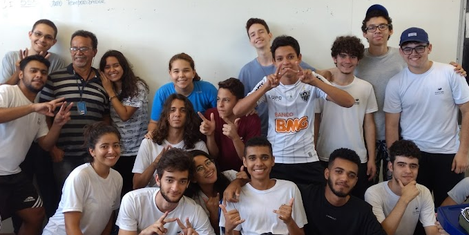
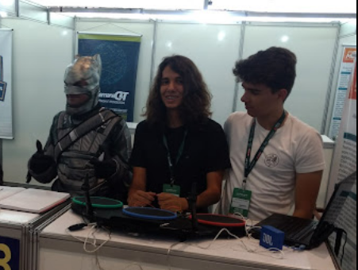
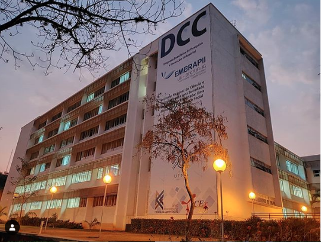

Passionate about challenges and solving problems using math and software.
I have been doing research with professor Dr. Guilherme Maia at the
Wisemap Lab for the past two years, on topics such rerouting algorithms, urban computing
and federated learning.
I'm a curious person always eager to learn something new!
Professional timeline
Technical high school in electronics
I did high school with an integrated technical course in electronics at Federal Center for Technological Education of Minas Gerais. There i had my first contact with software development, learning C and assembly for applications in embedded systems.
Eletronic Drum project
In 2017, i was an exhibitor at the 27th CEFET-MG Specific Exhibition of Works and Applications with the project "Electronic Drums". After the fair, I was invited to present the project at the 13th IPUC, at PUC-MG and at the National Week of Science and Technology at the International Fair of Business, Innovation and Technology (FINIT), at the Expominas exhibition center (photo).
Global Express intern
In 2019 I was an electronic intern at Global Express. I was in charge of analyzing and repairing faulty cell phones. I learned a lot about circuit analysis, work organization and especially how to work under pressure.
Undergraduate computer science student
In 2019 I enrolled in the bachelor's degree in computer science at the Federal University of Minas Gerais (UFMG), where I continue to study until today. I have been an undergraduate research fellow in the Department of Computer Science, where I do research in urban computing at the Wisemap Lab.
